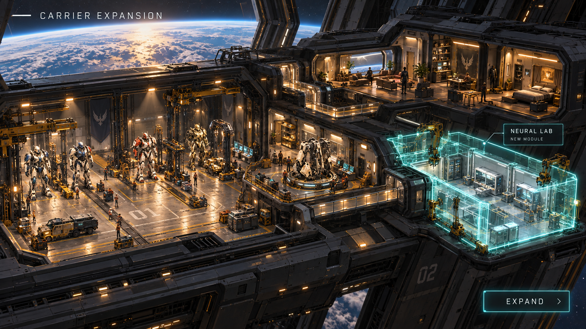

The player fantasy
Build a squad that grows with you. Every mission brings new knowledge. Every artefact offers a new form. Every pilot has a reason to keep going.

Lead four Numens across a divided galaxy. Recover knowledge that transforms them—and discover the people inside.
EXPLORE THE GAME ↓Build a squad that grows with you. Every mission brings new knowledge. Every artefact offers a new form. Every pilot has a reason to keep going.
Displaced from Earth, your pilots search for a home among the stars. They find Numens: armored living frames that rebuild themselves, guided by a pilot—and sometimes by a divine presence.

Explore a galaxy of missions across ground, water, and space. A discovery in one environment can unlock an advantage in another, giving every expedition a reason to change your squad.

Choose a team of four pilots and Numens. Match their specialisations to the environment, combine their strengths, and make room for a new approach as your collection evolves.

Inside the Numen’s upper-spine cockpit, pilot and frame connect. Beyond the carrier’s launch bay, a new horizon awaits.

Lead your squad through turn-based encounters. Use cover, coordinate abilities, and choose when to advance or hold your ground. The right team is only the beginning.

Secure the area, discover a Neural Artefact, and bring its knowledge back to your squad. Each recovery opens a new possibility for your Numens.

Neural Artefacts embody vast structured datasets in advanced neural networks. Their luminous cores and orbiting streams of data hold the potential to reshape a Numen from within.

Drag an artefact onto a Numen and link it to the frame. Unlock new equipment, abilities, and a secondary transformation mode through one clear customisation choice.

An artefact changes more than a number. Flight systems unfold, new weapon systems take shape, and neural shields emerge around the frame. Your choices become part of its silhouette.

Expand your mobile base with hangars, workshops, living spaces, and research facilities. Between missions, the carrier is where the squad prepares—and where its people belong.


Follow your pilots from displacement to refuge and rebellion. Unlock and collect manga chapters and interactive visual novels that explore their fears, bonds, and reasons to keep going.

Corporations, alien societies, and unknown life pursue survival and knowledge. Conflicts grow from fear and competing interests. Understanding another perspective is part of the journey.

Different technologies suggest different paths of evolution. An organic frame is one possible future: grown armor, woven structures, and living patterns of neural light.


Project Phoenix · Working title
EXPLORE THE DESIGN BOARD ↗